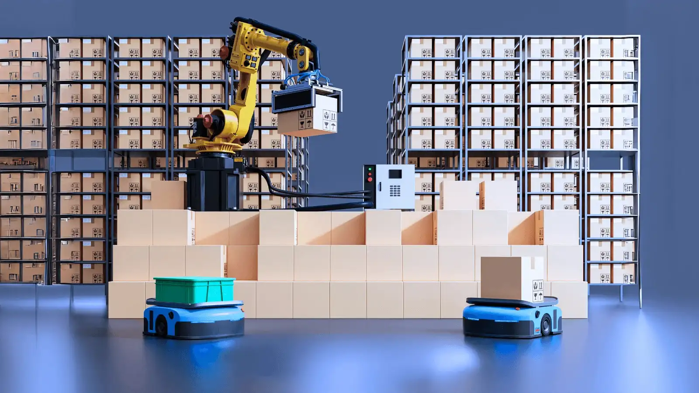

SUPPLY CHAINHow Intelligent Logistics Networks Are Changing Global Trade
Global supply chains are becoming more connected, data-driven and responsive. Discover how businesses can use visibility, automation and smarter transportation networks to improve operations.
Read Full Article